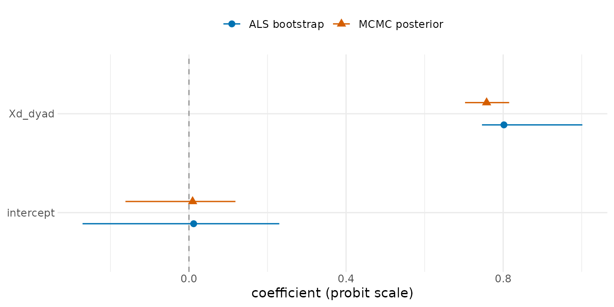

Fast (MCMC-free) AME Estimation
Cassy Dorff, Shahryar Minhas, and Tosin Salau
2026-07-12
Source:vignettes/fast_estimation.Rmd
fast_estimation.RmdWhen to use the fast estimator
ame() and lame() fit AME models by Bayesian
MCMC, which gives calibrated posterior inference but can take minutes.
For rapid model exploration, trying several ranks, screening covariates,
or getting starting values, the package also ships a fast, MCMC-free
point estimator:
-
ame_als(): cross-sectional networks -
lame_als(): longitudinal (replicated) networks -
ame_als_bootstrap(): bootstrap standard errors and intervals
It fits the same model
z_ij = mu + beta’x_ij + a_i + b_j + u_i’v_j + e_ij
by iterative block coordinate descent rather than
Gibbs sampling. It is typically tens to hundreds of times faster than
ame(), and the point estimates are usually close. Use it
when a point estimate is enough; use ame() /
lame() when the target is a posterior summary.
Wall-clock benchmark
The numbers below are indicative for normal-family AME with
R = 2; absolute timings depend heavily on CPU, BLAS, and
whether you are on a high-clock workstation or a virtualised / WSL host.
On the dev box (WSL2, single-threaded BLAS) the same benchmark ran
roughly 2-4× slower than the workstation reference column, so treat
these as order-of- magnitude. The point estimator scales O(n² · iter)
per BCD pass and is dominated by the linear system at each block; the
MCMC scales similarly per iteration but pays the constant of running
thousands of iterations. The “ratio” column is what you actually feel:
the ALS fit completes before MCMC finishes its burn-in for any
reasonable n.
| n |
ame() MCMC (4000 iter) |
ame_als() |
Speed ratio |
|---|---|---|---|
| 50 | 5-25 s | 0.1-0.5 s | 25-250× |
| 100 | 15-50 s | 0.3-1 s | 30-200× |
| 200 | 60-120 s | 2-3 s | 30-60× |
| 500 | 7-15 min | 15-30 s | 25-40× |
These ranges are wide on purpose: under a single-threaded BLAS on a virtualised host, the small-n speed ratios we have measured are several times larger than the “≈ 30×” figure in older docs, because the MCMC’s per-iteration overhead is fixed and the ALS solve is nearly free at n ≤ 100. Treat the ratio as “ALS finishes before MCMC’s burn-in” rather than a number to plan against.
For binary/poisson the point-estimate speedup ratio is much smaller (often only 3-10× on small networks) because the IRLS path runs 3-5 reweighting iterations per fit, and because the MCMC binary sampler is itself cheaper per iteration than the normal sampler. Bipartite and unipartite ALS run at broadly similar cost for comparable dimensions; which is faster depends on the exact shape and hardware, so do not read much into small differences.
The bootstrap can dominate. A
bootstrap = 100 parametric bootstrap runs the full ALS fit
101 times. For a binary ame_als(R = 1, bootstrap = 100) at
n = 50, we measured ≈ 135 s – slower than the equivalent MCMC fit. If
you only need the point estimate, skip the bootstrap
(bootstrap = 0, the default) and use the sandwich
vcov()/confint() on the fit. If you need
interval estimates at scale, compare the bootstrap cost with a regular
ame() MCMC run; for some binary networks the MCMC fit is
cheaper – and for binary R > 0 it is also the
statistically preferred choice, since the bootstrap inherits the point
estimator’s finite-sample upward bias (see Non-normal families
below).
To benchmark on your own hardware:
set.seed(1)
n <- 100
Y <- matrix(rnorm(n*n), n, n); diag(Y) <- NA
rownames(Y) <- colnames(Y) <- paste0("a", sprintf("%03d", 1:n))
t_als <- system.time(ame_als(Y, R = 2, family = "normal", verbose = FALSE))
t_mcmc <- system.time(ame(Y, R = 2, family = "normal", burn = 500,
nscan = 4000, odens = 25, verbose = FALSE, plot = FALSE))
cat("ALS: ", round(t_als["elapsed"], 2), "s\n",
"MCMC: ", round(t_mcmc["elapsed"], 2), "s\n",
"ratio:", round(t_mcmc["elapsed"] / t_als["elapsed"], 1), "x\n")What ALS can do vs. what only MCMC does
ALS is a fast point estimator. It covers most static AME workflows and several dynamic workflows, while posterior-specific features still require the Bayesian MCMC fits. The current coverage is:
| Capability |
ame() / lame() (MCMC) |
Fast point estimators |
|---|---|---|
| Families: normal, binary | yes | yes |
| Family: poisson | yes | yes |
| Families: ordinal / cbin / frn | yes | no (error) |
| Unipartite / bipartite mode | yes | yes |
symmetric = TRUE |
yes | yes |
R = 0..min(n)-1 |
yes | yes |
| Xrow / Xcol / Xdyad covariates | yes | yes |
Reproducibility via seed=
|
yes | yes (deterministic ALS) |
coef, vcov, fitted,
residuals
|
yes | yes |
confint |
posterior quantile | sandwich Wald OR bootstrap |
predict(newdata=) |
yes | yes |
summary, print,
latent_positions
|
yes | yes |
nobs |
yes | yes |
simulate |
yes | yes |
gof_plot |
posterior predictive | bootstrap-based GOF check |
ab_plot, uv_plot
|
yes | yes |
prior_summary |
yes | yes (reports “no priors”) |
dynamic_ab / selected dynamic_beta
|
yes | normal, binary, and Poisson panels via dynamic ALS; named changing-composition panels are aligned |
| Dynamic node-covariate coefficient paths | yes | period-specific node values when selected by
dynamic_beta; static node effects use actor means |
dynamic_uv (smooth AR(1) / t) |
yes | AR(1) and t for directed, symmetric, and bipartite panels |
dynamic_G |
yes | bipartite normal, binary, and Poisson panels via dynamic ALS; named changing-composition panels are aligned |
dynamic_uv_kind = "snap" |
yes |
lame_snap_als() for normal unipartite and bipartite
panels |
Custom priors (prior = list(...), g) |
yes | no Bayesian priors; dynamic ALS reads selected
prior$rho_*_mean and prior$lambda_*_als values
as smoothing controls |
Multi-chain (n_chains, via
ame_parallel) |
yes | no (use bootstrap = N) |
posterior_opts (save U/V/a/b samples) |
yes | no (point estimator) |
trace_plot (Rhat / ESS) |
yes | no (deterministic) |
custom_gof, periodic_save
|
yes | no |
When you call the unified front door with MCMC-only arguments, the ALS dispatcher warns and lists exactly which ones it ignored – for the arguments each entry point actually accepts. Two notes on the edges:
-
nscan/burn/odens/gare accepted-then-ignored with a warning by bothame(method = "als")andlame(method = "als"). - The static ALS dispatcher warns and ignores MCMC tuning arguments
such as
nscan,burn,odens, prior settings not used by the fast path, andg. Dynamic ALS has no posterior priors, but it does use selected entries inprioras deterministic smoothing controls (prior$rho_ab_mean,prior$rho_beta_mean,prior$rho_uv_mean,prior$rho_G_mean, andprior$lambda_*_als). Dynamic requests are stricter: supporteddynamic_ab, selecteddynamic_beta, AR(1) or tdynamic_uv, and bipartitedynamic_Grequests route to dynamic ALS for normal, binary, and Poisson panels. Named changing-composition panels are aligned to the union actor set and actor-entry gaps break the smoothing penalties. Student-t dynamic UV fits attach final local transition-weight matrices asfit$lambda_uandfit$lambda_v.lame(method = "als", dynamic_uv = TRUE, dynamic_uv_kind = "snap")routes tolame_snap_als()for supported normal unipartite and bipartite panels; unsupported dynamic stacks raise a specific error rather than being silently ignored. Useals_max_iter,als_tol, andals_stabilityfor longer dynamic ALS runs and start-sensitivity checks. - Passing longitudinal-only arguments such as
dynamic_uv,dynamic_ab, ordynamic_betatoame()(cross-sectional) raises the usual “longitudinal-only argument” error before ALS runs, because they are not validame()arguments at all. -
n_chainsis aname()/ame_parallel()argument; it is not alame()formal, solame(method = "als", n_chains = ...)raises an “unused argument” error rather than a warn-and-ignore. Usebootstrap = Nfor ALS uncertainty regardless of entry point.
A first fit
set.seed(1)
n <- 40
a <- rnorm(n, 0, 0.5); b <- rnorm(n, 0, 0.5)
Xd <- matrix(rnorm(n * n), n, n)
Y <- 0.5 + 0.8 * Xd + outer(a, b, "+") + matrix(rnorm(n * n), n, n)
diag(Y) <- NA
fit <- ame_als(Y, Xdyad = Xd, R = 1, family = "normal", verbose = FALSE)
fit
#> AME fit via iterative block coordinate descent (fast, MCMC-free)
#> Family: normal | Mode: unipartite | R = 1
#> Network: 40 x 40, 1 time slice
#> Converged: TRUE in 5 iterations
#>
#> Coefficients:
#> intercept dyad1_dyad
#> 0.6315 0.7944
#>
#> Variance components:
#> va cab vb rho ve
#> 0.1929 0.0461 0.2217 -0.0198 1.0461
#>
#> va/vb: variances of the sender/receiver effects | cab: their covariance | rho:
#> dyadic residual reciprocity | ve: residual variance.
#> (Descriptive summaries, not random-effect variance components.)
#> Point estimate only; no uncertainty. Re-fit with `bootstrap = N` (e.g.
#> `ame_als(Y, ..., bootstrap = 200)`) to attach bootstrap intervals in one call.coef(), fitted(), residuals(),
predict() and plot() all work as for any model
object. The printed variance components (va,
vb, cab, rho, ve)
are descriptive summaries of the fitted effects, not random-effect
variance components.
Choosing the rank R
There is no information criterion for R. Fit a few
values and look for an elbow in the deviance / SSE:
devs <- sapply(0:3, function(r)
ame_als(Y, Xdyad = Xd, R = r, family = "normal",
verbose = FALSE)$deviance)
data.frame(R = 0:3, deviance = round(devs, 1))
#> R deviance
#> 1 0 1617.5
#> 2 1 1465.6
#> 3 2 1324.9
#> 4 3 1193.4If the curve declines smoothly with no clear elbow, keep
R small and confirm the chosen rank with an
ame() fit.
Non-normal families
For binary and poisson data the default
non_normal_method = "irls" runs an iteratively reweighted
least squares loop, returning coefficients on the calibrated link scale
(probit for binary, log for poisson). The alternative
non_normal_method = "transform" is faster but its
coefficients are on an uncalibrated rank scale, good for the sign and
ranking of effects but not their magnitude.
One caveat for binary fits with R > 0: the factor
block is a penalized (MAP-style) point estimate, and a residual
finite-sample (incidental-parameters) upward bias in the coefficients
remains – roughly +10-15% at n = 50, shrinking with n, and largest when
R is set higher than the data support. The bootstrap
reproduces rather than removes this bias, and ame_als()
prints a reminder when verbose = TRUE. The binary examples
in this vignette use R = 0, which does not trigger this
caveat; for final binary coefficient inference at R > 0,
use the MCMC ame().
Uncertainty
The point estimator carries no uncertainty. Use the bootstrap:
bt <- ame_als_bootstrap(fb, R = 100, type = "parametric",
seed = 1, verbose = FALSE)
summary(bt)
#>
#> ── Bootstrap results: fast AME estimator ───────────────────────────────────────
#> Type: parametric | Family: binary | Mode: unipartite
#> Replicates: 100 valid of 100 (100%)
#> Network: 40 x 40, 1 time slice, R = 0
#> ────────────────────────────────────────────────────────────────────────────────
#> Regression coefficients
#> Estimate Boot SE 2.5% 97.5% sig
#> intercept 0.0119 0.139 -0.271 0.23
#> dyad1_dyad 0.8019 0.5385 0.746 1.0016 *
#> * = 95% percentile CI excludes zero
#> ────────────────────────────────────────────────────────────────────────────────
#> Variance components
#> Estimate Boot SE 2.5% 97.5%
#> va 0.2443 0.2128 0.2276 0.5657
#> cab 0.0278 0.1098 -0.0662 0.1277
#> vb 0.2490 0.2289 0.2067 0.4989
#> rho -0.0075 0.0402 -0.1028 0.0606
#> ve 1.0000 0.0000 1.0000 1.0000
#> ────────────────────────────────────────────────────────────────────────────────
#> Additive effects (rotation-invariant, aggregated directly)
#> Sender a: mean |SE| = 0.5983
#> Receiver b: mean |SE| = 0.596Two rows of this table deserve a comment before you report anything
from it. First, the Boot SE column is the raw standard
deviation across replicates, and for dyad1_dyad it visibly
disagrees with the interval printed next to it: an SE of 0.5385 would
imply a Wald interval of roughly [-0.25, 1.86], yet the 95% percentile
CI is [0.746, 1.0016] – a width that corresponds to an SE of about
0.065. The gap comes from a single divergent binary IRLS replicate (1 of
the 100 refits returned a coefficient of 6.2), which inflates the
standard deviation while barely moving the percentile quantiles. That is
exactly why the package defaults to percentile CIs: report the
percentile interval, which is what confint() returns by
default, not a Wald interval built from the printed SE.
Second, one row of the variance-components table is constant by
construction: for the binary family the latent residual variance
ve is fixed at 1 by probit identification, so its bootstrap
SE is exactly zero and its interval is the point [1, 1] – that row is
expected, not a failed bootstrap. See ?ame_als for the
ve vs ve_working distinction.
type = "parametric" (the default) simulates fresh
outcomes from the fitted model and refits; type = "block"
resamples time slices and is available for longitudinal fits with
several time points. confint() and vcov() work
on the bootstrap object.
A fast analytic alternative for the regression coefficients
only is the conditional sandwich covariance,
vcov() / confint() applied directly to the
fit. It is anti-conservative (it holds the additive and multiplicative
effects fixed); the bootstrap is the recommended tool for full
inference.
ALS bootstrap vs MCMC posterior on the same data
A useful sanity check on the fast estimator is to fit the same data
with both engines and overlay the coefficient intervals. With a
calibrated link (non_normal_method = "irls" for binary, the
default) the ALS bootstrap should give a coefficient story qualitatively
similar to the MCMC posterior on cases the model fits well; large
differences mean the posterior fit is the better reference for that
dataset.
# wrap Xd into a 3-D array with an explicit slice name so the ALS and MCMC
# paths produce identical coefficient names (the auto-naming default differs
# between the two engines)
Xd_arr <- array(Xd, dim = c(nrow(Xd), ncol(Xd), 1),
dimnames = list(NULL, NULL, "Xd"))
# refit the binary ALS fit with the bootstrap attached so tidy() returns
# bootstrap-based intervals
fb_b <- ame_als(Yb, Xdyad = Xd_arr, R = 0, family = "binary",
verbose = FALSE, bootstrap = 100, bootstrap_seed = 1)
# fit the same data with MCMC using a short chain for a quick comparison
fit_mcmc <- ame(Yb, Xdyad = Xd_arr, family = "binary", R = 0,
burn = 200, nscan = 1000, odens = 5,
verbose = FALSE, plot = FALSE, gof = FALSE,
seed = 1)
# collect the common coefficient interval columns without relying on
# vignette-time s3 dispatch through broom
coef_interval_table <- function(fit) {
est <- coef(fit)
ci <- confint(fit)
terms <- intersect(names(est), rownames(ci))
data.frame(
term = terms,
estimate = unname(est[terms]),
conf.low = unname(ci[terms, 1]),
conf.high = unname(ci[terms, 2]),
row.names = NULL
)
}
als_tdy <- coef_interval_table(fb_b)
mcmc_tdy <- coef_interval_table(fit_mcmc)
df <- rbind(
cbind(estimator = "ALS bootstrap",
als_tdy[, c("term", "estimate", "conf.low", "conf.high")]),
cbind(estimator = "MCMC posterior",
mcmc_tdy[, c("term", "estimate", "conf.low", "conf.high")])
)
library(ggplot2)
ggplot(df, aes(x = estimate, y = term,
colour = estimator, shape = estimator)) +
geom_vline(xintercept = 0, linetype = "dashed", colour = "grey60") +
geom_pointrange(aes(xmin = conf.low, xmax = conf.high),
position = position_dodge(width = 0.45),
size = 0.5) +
scale_colour_manual(values = c("ALS bootstrap" = "#0072B2",
"MCMC posterior" = "#D55E00")) +
scale_shape_manual(values = c("ALS bootstrap" = 16,
"MCMC posterior" = 17)) +
labs(x = "coefficient (probit scale)", y = NULL,
colour = NULL, shape = NULL) +
theme_bw() +
theme(panel.border = element_blank(),
axis.ticks = element_blank(),
legend.position = "top")
Two intervals on the same side of zero with substantial overlap means ALS is a fine point estimate for that coefficient; intervals that disagree on sign or location point to the MCMC fit for that dataset.
Longitudinal data
lame_als() is the longitudinal counterpart. Its effects
are static (pooled across time), as in a non-dynamic lame()
fit.
set.seed(3)
Yl <- replicate(5, {
# intercept 0.4 + sender/receiver structure + noise (no dyadic
# covariate is passed below, so only the intercept is recoverable)
m <- 0.4 + outer(a, b, "+") + matrix(rnorm(n * n), n, n)
diag(m) <- NA
m
}, simplify = FALSE)
lf <- lame_als(Yl, R = 1, family = "normal", verbose = FALSE)
coef(lf)
#> intercept
#> 0.4978209Summary
| Task | Function |
|---|---|
| Fast cross-sectional point estimate | ame_als() |
| Fast longitudinal point estimate | lame_als() |
| Bootstrap standard errors / intervals | ame_als_bootstrap() |
| Calibrated posterior inference |
ame() / lame()
|
The fast estimator returns point estimates and bootstrap or sandwich uncertainty. The MCMC estimator returns posterior summaries.